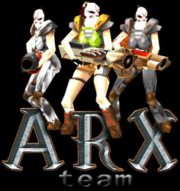

О нас
Во-первых, надо сказать, что сайт - это прежде всего мое, то есть [ArX]Elric!'а детище, так что я
буду писать от своего лица.
Идейно-творческое обьединение [ArX]team основал в октябре 2002 года Александр Фокин, то бишь я.
Вскоре ко мне присоединились Дойников Петр (LOky) и Попов Никита (Zloy).
На сегодняшний день мы и составляем команду.
ARX расшифровывается как Atomic Rail (gRenade, Rocket?) eXecutors.
Это имя придумал Zloy.
Мы все хорошие программисты, неплохие квакеры и большие приколисты. Где-то на этом сайте вы найдете наш
кудвачный конфиг - торжество программерской мысли над ограниченностью возможностей скриптового языка кваки :-).
Несмотря на наше пристрастие к кваке, мы не являемся упертыми квакерами, и любим попрограммировать (когда не удается
поквакать :-)). Участвовали в олимпиадах по программированию, я отхватил 3-й диплом на всероссийском этапе,
так что благодаря ему сейчас учусь на ВМК МГУ, LOky и Zloy сейчас - студенты ИжГТУ (Ижевского Государственного
Технического Университета).
Ну а в свободное от олимпиадного программирования время мы решаем более близкие к реальности задачи. Так, например,
Zl'ым и нашим общим другом - Спиридоновым Андреем в начале 2003-го года был собран робот управляемый с компьютера
который, к сожалению, умел лишь ездить :-). После проходившей весной 2003-го научно-практической коференции робот был
разобран на запчасти и до нынешнего времени не сохранился.
Кроме того, меня одно время интересовала тема создания Roguelike-игры (да и сейчас интересует),
и я накопил в этом деле приличный опыт.
О сайте
Этот сайт - типичная домашняя страница и здесь вы не найдете многометровых архивов, обзоров новых игрушек и прочего
барахла, которым наводнены сайты содержания "все в одном". На нашем сайте мы выкладываем только продукты нашего
творчества, которые могут быть полезны (и интересны) не только своим создателям, но и простым пользователям - нашим
гостям.